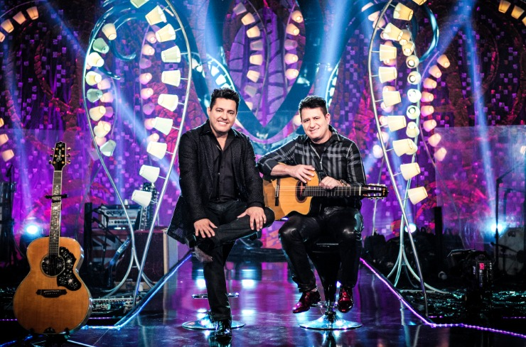

injectThis(`
<div class="container mt-4 ml-5">
        <link rel="stylesheet" href="./css/detalhe-evento.css" />    
    <nav aria-label="breadcrumb">
        <ol class="breadcrumb">
            <li class="breadcrumb-item"><a href="indexContent.html">Home</a></li>
            <li class="breadcrumb-item"><a href="eventos-categoria-musica.html">Música</a></li>
            <li class="breadcrumb-item active" aria-current="page">Detalhe do Evento</li>
        </ol>
    </nav>


    <div class="conteudo">
        <div class="card mb-3">
            
            <span class="small m-2">Bruno e Marrone</legenda>
                <div class="card-body">
                    <p class="small tipo-evento">
                        Música
                    </p>
                    <h5 class="card-title">
                            Bruno e Marrone
                        <span class="classificacao_etaria_wrap">
                            <span title="Livre para todos os públicos"
                                class="classificacao_etaria doze">12</span>
                        </span>
                    </h5>
                    <p class="small">
                        COM Bruno e Marrone e Banda
                    </p>

                    <p class="card-text">
                        <strong>Para comemorar os 5 anos da casa de shows Oasis Eventos, 
                            a cidade de São Carlos recebe a dupla sertaneja Bruno & Marrone para um 'jantar show'.
                            Bruno & Marrone é uma dupla brasileira de música sertaneja formada pelos cantores Vinícius 
                            Félix de Miranda, conhecido artisticamente como Bruno, e José Roberto Ferreira, conhecido 
                            artisticamente como Marrone. Com sua formação em 1985, a dupla tem mais de 34 anos de carreira. 
                            Desde o ano 2001, quando estouraram nacionalmente com o hit "Dormi na Praça", a dupla não parou de crescer. 
                            A cada ano que passava o sucesso e os fãs aumentavam. Em todos os anos estavam no Top 10 dos artistas mais vendidos e escutados nas rádios brasileiras. 
                            Segundo a empresa de monitoramento Crowley Broadcast, de 1999 a 2013, Bruno e Marrone foram os artistas que mais tocaram nas rádios. São mais de 15 anos no topo das paradas de sucesso de todo o Brasil. 
                            <br><br>
                            Duração: 120 min
                            <br><br>
                            Quando 15/05/2019 Horário: 22:00h
                        <br><br>
                        <strong>Onde: Oasis Eventos </strong> <br>
                        <br>
                        
                    </p>
                    <p class="card-text">
                            <i class="far fa-money-bill-alt"></i>
                        <i class="fa fa-money"></i> Valores: Inteira R$ 100,00 e Meia (Estudantes, Professores e Aposentados) R$ 50,00
                    </p>
                    
                </div>
        </div>
    </div>

    <div id="map"></div>
</div>
`,'#bodyinject','./js/detalhe-evento.js');